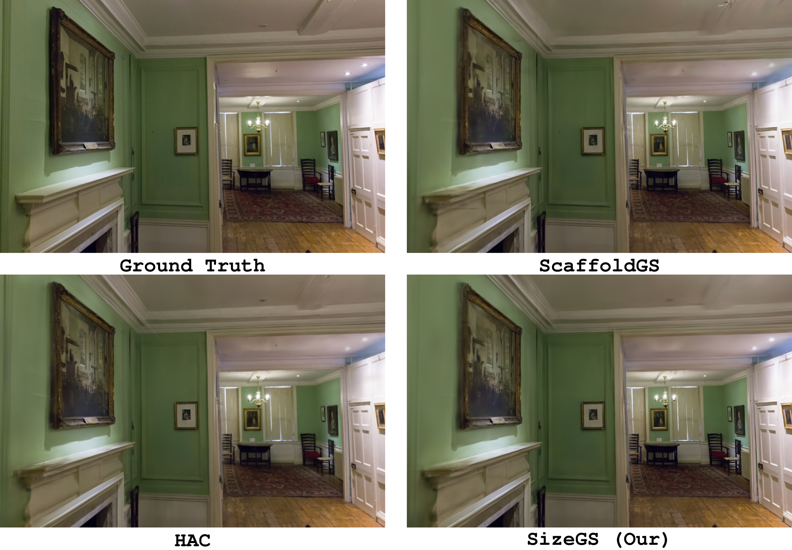

SizeGS: Size-aware Compression of 3D Gaussian Splatting via Mixed Integer Programming ACM MM 2025
- Shuzhao Xie*
- Jiahang Liu*
- Weixiang Zhang
- Shijia Ge
- Sicheng Pan
- Chen Tang
- Yunpeng Bai
- Cong Zhang
- Xiaoyi Fan
- Zhi Wang Tsinghua University, Harbin Institute of Technology (Shenzhen) The Chinese University of Hong Kong, The University of Texas at Austin, Jiangxing Intelligence Inc. *equal contribution
Our method consists of two steps: 1) Given a size budget (e.g., 8MB for the room scene), our method can search a set of hyper-parameters to compress the corresponding 3DGS model within 10 minutes while achiving optimal quality. 2) After completing the hyperparameter search, we can employ finetuning to further enhance the visual quality. Note that durning finetuning, the compressed file size remains unchanged. The videos above show the visual results after different numbers of fine-tuning iterations. Typically, 100 iterations of fine-tuning are sufficient.
Abstract
Effective compression technology is crucial for 3DGS to adapt to varying storage and transmission conditions. However, existing methods fail to address size constraints while maintaining optimal quality. In this paper, we introduce SizeGS, a framework that compresses 3DGS within a specified size budget while optimizing visual quality. We start with a size estimator to establish a clear relationship between file size and hyperparameters. Leveraging this estimator, we incorporate mixed precision quantization (MPQ) into 3DGS attributes, structuring MPQ in two hierarchical levels—inter-attribute and intra-attribute—to optimize visual quality under the size constraint. At the inter-attribute level, we assign bit-widths to each attribute channel by formulating the combinatorial optimization as a 0-1 integer linear program, which can be efficiently solved. At the intra-attribute level, we divide each attribute channel into blocks of vectors, quantizing each vector based on the optimal bit-width derived at the inter-attribute level. Dynamic programming determines block lengths. Using the size estimator and MPQ, we develop a calibrated algorithm to identify optimal hyperparameters in just 10 minutes, achieving a 1.69x efficiency increase with quality comparable to state-of-the-art methods.
Main Performance
End-to-end performance in size-aware compression. Our method can search out better hyper-parameters to compress the 3DGS into desired file size with less time consumption. “Mip-NeRF 360 - 18.33 MB” refers to “dataset - size budget”.
Visualization
Qualitative results of 3DGS, ScaffoldGS, HAC, and SizeGS (our method). Models we used to render the following views are the same as the above "End-to-end performance" table.

Bicycle (MipNeRF-360)

Flowers (MipNeRF-360)
Drjohnson (Deep Blending)
Truck (Tank & Temples)
Citation
Acknowledgments
We sincerely thank the anonymous reviewers from ICLR, CVPR, and ACM MM for their valuable feedback and suggestions. We also thank our lab mates for their help in improving the manuscript. This work is supported in part by National Key Research and Development Project of China (Grant No. 2023YFF0905502), National Natural Science Foundation of China (Grant No. 92467204 and 62472249), and Shenzhen Science and Technology Program (Grant No. JCYJ20220818101014030 and KJZD20240903102300001).
The website template was borrowed from Michaël Gharbi, Ref-NeRF, and Zip-NeRF.